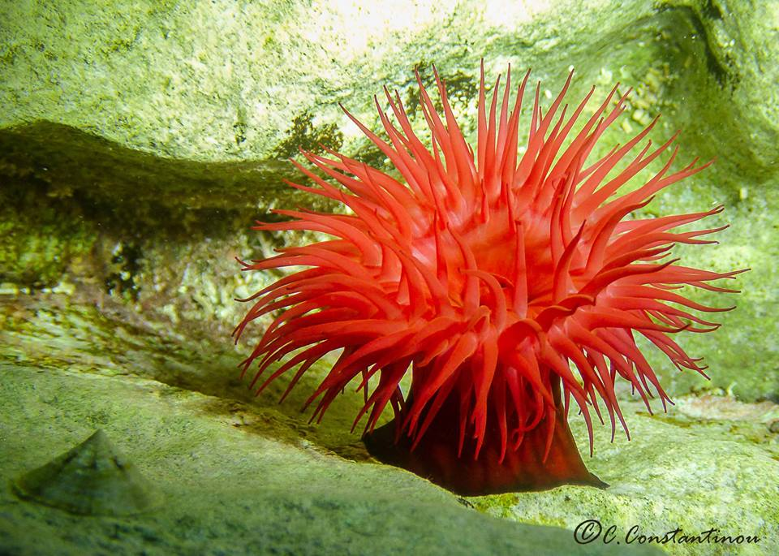
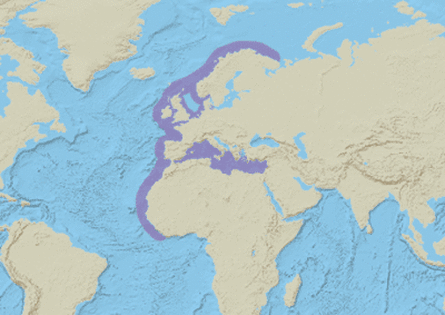
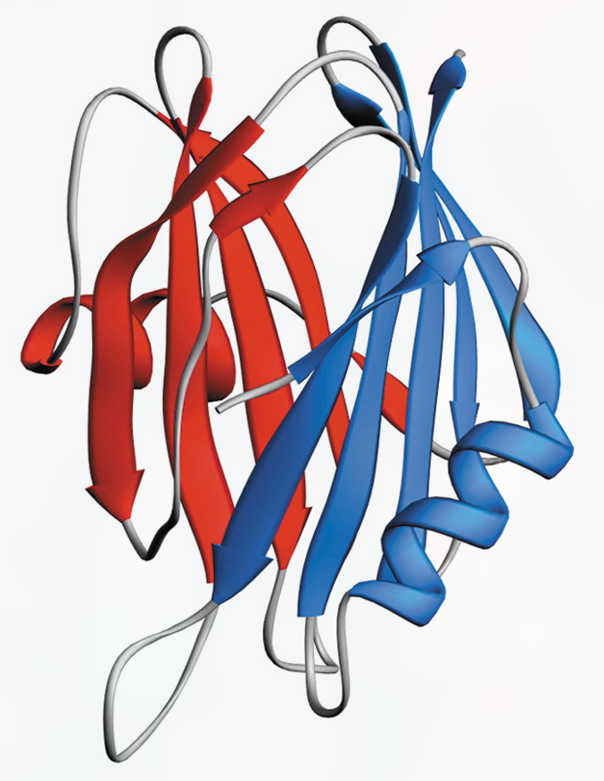

Biology & Classification
What is the beadlet sea anemone?
A. equina is a sea anemone in the Phylum Cnidaria, a group which also includes corals and jellyfish. This group is defined by a unique body plan and the presence of specialized stinging cells call nematocysts. The cnidarian body plan generally involves a radially symmetric body with a central mouth surrounded by nematocyst-carrying tentacles. The beadlet sea anemone forms solitary polyps which can very from red, brown, and green. The anemone is attached to the ocean surface by a stalk, which also contains the digestive and reproductive organs. At the top of the stock is a mouth surrounded by many stinging tentacles. This is the common body form for all polyps. Bright blue spots just below the tentacles can be used to distinguish A. equina from A. fragacea (Terrell).
How do they reproduce?
Reproduction can be carried out either asexually or sexually (Terrell). Asexual reproduction results from a new individual growing from a broken off piece of another. Sexual reproductions begins with a male releasing sperm into the water. The free-floating sperm then enters the gastrovascular cavity of a female. The egges, held inside this cavitiy, are then fertilized. A. equina is the only known viviporous anemone (Terrell). That is to say, they are the only known anemone which brood the young internally and give birth to live young. Once released from the female's body, the larva find a place to settle. They attach themselves to a surafec and metamorphosize into a more adult-like polyp.
What do they eat?
The beadlet sea anemone has a wide range of food items. Common prey items for this species include bivalves, isopods, gastropods, bryozoans, and chitons (Terrell). Upon contact with prey, a filament is shot out of the nematocysts and embeds itself into the prey. Venom, in the form of equitoxins, is then injected into the prey.

Habitat & Distribution
The beadlet anemone is found in the North Atlantic Ocean, the Mediterranean Sea, and the Atlantic coast of Africa (Terrell). The most substantial populations can be found throughout the British Isles. A. equina is a shallow-water intertidal species, capable of surviving both fully submerged and fully exposed. When exposed to the open air, they present a notable behavior of contracting their bodies (Terrell). This serves to protect the anemone from predation and reduce water loss. Although it is generally considered to be a shallow-water species, individuals may be found at depths of up to 20 meters.
(Coral Reefs of the World)
Equitoxin
What are equitoxins?
Equitoxins are part of a larger group known as actinoporins (Anderluh et al., 2003). They are produced by the beadlet anemone inside of the nematocysts and are used for hunting and self-defense. Equitoxins are not found freely within the environment, and an organism must be stung by an A. equina anemone in order to be affected. The toxins are not deadly to humans, but can cause a sharp, stinging sensation around the area. For this reason, it is best to avoid physical contact with beadlet sea anemones. Toxins from the beadlet anemone are capable of killing many smaller organsims, in particular those which it feeds upon regularly. Equitoxins trigger cell death through the formation of pores along the cell membrane. The most well-studied equitoxin, EqtII, exhibits two-fold symmetry. The halves of the molecule, termed A and B, each contain a β sheet and α helix in association with each other (Anthanasiadis et al., 2001).
EqtII model, with blue being part A and read being part B of the compount (Anderluh et al., 2003).
How do equitoxins work?
There are two steps in the process of binding to the cell membrane (Anderluh et al., 2003). First, an aromatic cluster on the surface of the equitoxin binds to the cell membrane. Then, an N-terminal helix is plunged deep into the membrane. This process differs significantly from other pore-forming toxins, which use differing mechanisms to bind to the lipid membrane. This binding process results in the transformation of the equitoxin from a water-soluble form to a lipid membrane-soluble form. Once a critical concentration of equitoxins has been attached to the membrane, pore formation begins as a result of the oligomerization of the 3-4 monomers (Belmonte et al., 1993).